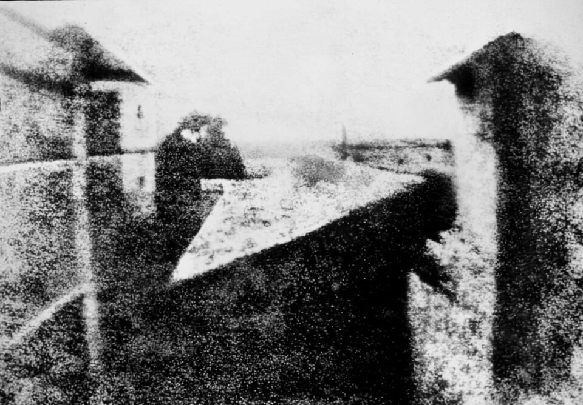

Photography
what is photography?
Photography is the art of capturing light with a camera, usually via a digital sensor or film, to create an image. With the right camera equipment, you can even photograph wavelengths of light invisible to the human eye, including UV, infrared, and radio.
The first permanent photograph was captured in 1826 (some sources say 1827) by Joseph Nicéphore Niépce in France. It shows the roof of a building lit by the sun. You can see it reproduced below:

We’ve come a long way since then.
Blockquote
“Photography is a way of feeling, of touching, of loving. What you have caught on film is captured forever… It remembers little things, long after you have forgotten everything.” — Aaron Siskind
One of my favorite photos taken ever
More
The people who make up today’s thriving photographic community are our eyes to the world. Whether established artists and journalists or passionate emerging voices, they inform us, they inspire us, they amaze us, they put our world in the broader context of history. But that community also faces great challenges — dwindling sales, increased competition and a fragile trust in photographers’ mission to inform. Too often, those factors can make those of us in that community, photographers and photo editors alike, lose sight of what drive us.
Photographs are the universal language of our era. Everyone has hundreds, maybe thousands in their pocket. Weightless, they turn the scale when the argument is: What happened here? Images don’t age or warp. A great photographer’s strings never go out of tune. It is for this reason that we need photographers. They are the ones who sort all the chaos of the world into images that bring clarity to the free-for-all of life. They are the witnesses and artists who can distill the mayhem and beauty that surrounds us. They call our attention to the things we miss in our everyday lives and they call our attention to events and people at a great distance from our own patch of the universe. When they direct our eyes and hearts with precision and honesty, we know what we know differently and better. Photographers teach us to look again, look harder. Look through their eyes.
Ruddy Roye, Photographer
I shoot because I see. I shoot because if I don’t, I don’t know who will. Activism is seen as a dirty word. I shoot because I find peace in being especially active, and being a vigorous advocate for a cause.
How does one define what a “cause” is? According to Webster, it is “a person or thing that acts, happens, or exists in such a way that some specific thing happens as a result; the producer of an effect.”
I wish that every image I photograph reexamines and redefines the image of the black man, the black woman, and the black child. My photography is first and foremost a catalyst or reason to motive human action. Every picture I take asks the questions, “Who am I and what is my role here on this earth?” It is my way of seeing. It is my way of saying this is another way of seeing me.
Sarah Leen, Director of Photography, National Geographic
I have spent my entire professional life creating, editing, critiquing or teaching photography and working with photographers. It has been the way that I have experienced much of the world. In a deeply personal way I feel an image is a poem about time, about “staying the moment.” Photography can defeat time. Images can keep the memory of a loved one alive, hold a moment in history for future generations, be a witness to tragedy or joy. They can also change behavior, stimulate understanding and create a sense of urgency that will move people to action. Photography is the universal language that speaks to the heart.
Photographers are the dedicated, passionate and sometimes half-crazy individuals who are willing to give their lives, too often quite literally, to show us what needs to be seen, what needs to be known. I can think of no greater honor nor privilege than to have lived a life surrounded by images and the amazing individuals who create them and share them with us.